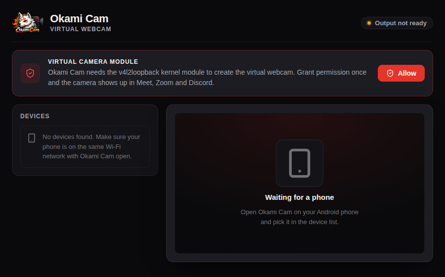

Okami Cam streams your phone's camera over Wi‑Fi into a virtual V4L2 device. Discord, Teams, Meet, Zoom and OBS just see a camera. No cable, no browser tab, no cloud.
A webcam sits on a stand for an hour with its screen dark. Most phone‑webcam apps die the moment the display sleeps, because the camera is tied to the visible activity. Okami Cam binds the camera to the streaming session instead, claims a camera foreground service, and holds the CPU and the Wi‑Fi radio awake for the duration of the call.
Set the phone on a stand, press the power button, and keep talking. The stream keeps flowing. When the desktop disconnects, the phone releases the camera and its locks on its own — no drained battery because you forgot to stop it.
The phone encodes H.264 with the hardware encoder and streams it over TCP. The desktop finds it with mDNS — no IP addresses to type — and tees the video into a v4l2loopback device and into the app's own preview, so what you see is exactly what the call sees.
mDNS discovery on the local network. Open both apps and the phone is simply there.
Not a browser hack. Any Linux app that can open a webcam can open this one.
Video goes phone → your computer. No account, no server, no cloud in the path.
Applied to the virtual camera and the preview together, so they never disagree.
The phone reports its charge inside the stream, shown in the desktop app.
Loading the kernel module goes through Polkit, with a closed set of operations.

Debian and Ubuntu. Adding the repository means apt upgrade keeps Okami Cam
up to date from then on — packages are GPG‑signed and verified by apt.
# Trust the release signing key curl -fsSL https://julia-eileen.github.io/okami-cam-releases/okami-cam.gpg \ | sudo tee /usr/share/keyrings/okami-cam.gpg > /dev/null # Point apt at the repository echo "deb [signed-by=/usr/share/keyrings/okami-cam.gpg] \ https://julia-eileen.github.io/okami-cam-releases/apt stable main" \ | sudo tee /etc/apt/sources.list.d/okami-cam.list
sudo apt update sudo apt install okami-cam
This pulls in ffmpeg and builds the v4l2loopback kernel
module through DKMS.
Grab the Android app, put the phone on the same Wi‑Fi, and open Okami Cam on both ends. The phone appears in the desktop list within a few seconds. Pick a camera, hit Start, then select Okami Cam as your webcam in Discord, Teams or Meet.
Secure Boot: if your machine has Secure Boot enabled, the
v4l2loopback module has to be signed with a key your firmware trusts, or the
kernel will refuse to load it. Okami Cam detects this and explains what to do — it will
never disable Secure Boot or ask for your MOK password. Enrolling a MOK key is a
one‑time step you perform yourself.
| Desktop | Phone |
|---|---|
Linux with v4l2loopback and ffmpeg 8+ |
Android 7.0 or newer |
Polkit (pkexec) for loading the module |
Camera permission |
| x86‑64 · Debian / Ubuntu package | Both devices on the same Wi‑Fi network |